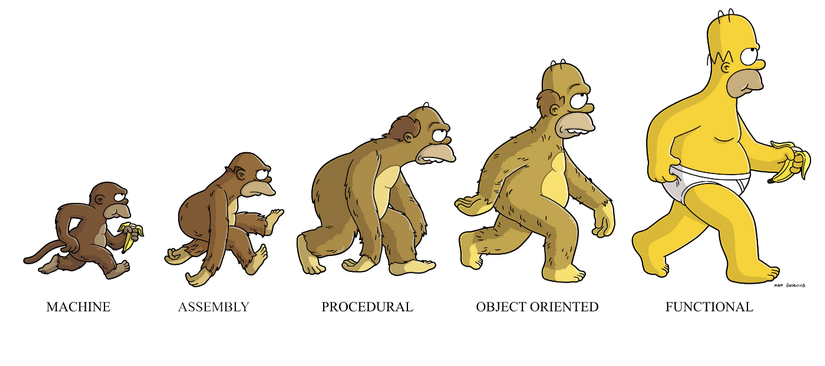

Created by Chí Thanh

Haskell, Ocaml, Erlang/Elixir, Scala
Clojure, Common Lisp, Scheme
Functional programing in Javascript
Lập trình mệnh lệnh sử dụng câu lệnh để thay đổi trạng thái của chương trình.
Ví dụ C / C++ / PHP/ Javascript / C# / Java.Lập trình khai báo thể hiện tính logic của sự tính toán và cấu trúc mà không mô tả luồng điều khiển của nó.
Ví dụ SQL query, regular expression, lập trình hàmIntrodution Haskell language:
Pure functional language
Data type: strong and static
Strongly typed language has stricter typing rules at compile time
Statically typed has the type of a variable is known at compile time.
Bool, Int, Float, Double, Char, String
List, Tuple
Algorithm in Haskell is function
Mọi thứ khác data structure chính là function. Không variable, không class, không object
5 + 6 -- return 115 * 6 -- return 30[1,2,3,4] !! 1 -- return 2(+) is function(*), (-), (!!) is function too
-- Haskell declare function
add x y = x + y-- Haskell call function
add 5 6 -- return 11a = 5a -- is function and return 5No return keyword, expression everywhere
Immutability
Purity
Recursion
Higher-Order Functions
Currying
Composition
a = 5
a = 5 -- compiler errorImpact: no variable, no for, no while
Không thay đổi data bên ngoài hàm số.
// this function has side effects
var z = 10;
function add(x, y) {
z = 20; // change outside data
return x + y;
}
Hệ quả: No side effects
Hệ quả 2: Pure Function sẽ luôn trả về cùng output với cùng input, bất kể có thực hiện bao nhiêu lần
Agruments as function
Return a function
1, 1, 2, 3, 5, 8, 13, 21,...
// JS
function fibonacci (n) {
if (n < 0) {
throw new Error("Invalid argument");
}
if (n == 0 || n == 1) {
return 1;
}
return fibonacci (n - 1) + fibonacci (n - 2);
}
-- Haskell
fibonacci 0 = 1
fibonacci 1 = 1
fibonacci n = fibonaci(n-1) + fibonaci(n-2)
Curry is important thing in Functional Programing
// JS
add = function (x, y) {
return x + y
}
// arrow way
add = (x, y) => x + y
// JS
add2 = function (x) {
return function (y) {
return x + y
}
}
// arrow way
add2 = x => y => x + y
-- Haskell
3 + 2
(+) 3 2
(+3) 2
add x y = x + y
add20 = add 20
add20 10 -- return 30
All function in Haskell is curry function in default
map; fold; filterFold in Haskell is Reduce in js
// JS
[1, 4, 9, 16].map(x => x * 2); // return [2, 8, 18, 32]
-- haskell
map (*2) [1, 4, 9, 16]
// JS
const num = [1, 2, 3, 4];
const total_reducer = (acc, value) => acc + value;
num.reduce(total_reducer) // return 10
-- Haskell
foldr (+) 0 [1, 2, 3, 4] -- return 10
// JS
var words = ['spray', 'limit', 'elite',
'exuberant', 'destruction', 'present'];
const result = words.filter(word => word.length > 6);
// result = ["exuberant", "destruction", "present"]
-- Haskell
let words = ["spray", "limit", "elite", "exuberant",
"destruction", "present"]
filter ((> 6) . length) words
-- result = ["exuberant", "destruction", "present"]
(f.g)(x) = f(g(x))
// JS
const users = [
{ name: "Jeff", age: 14 },
{ name: "Jack", age: 18 },
{ name: "Milady", age: 22 },
]
const filter = (cb, arr) => arr.filter(cb);
const map = (cb, arr) => arr.map(cb);
map(u => u.name, filter(u => u.age > 16, users));
// return ["Jack", "Milady"]
compose(function1, function2, ... , functionN): Function
// JS
const compose = (...functions) => args =>
functions.reduceRight((arg, fn) => fn(arg), args);
const filter = cb => arr => arr.filter(cb);
const map = cb => arr => arr.map(cb);
compose(
map(u => u.name),
filter(u => u.age > 16)
)(users)
// return ["Jack", "Milady"]
-- Haskell
let users = [ ("Jeff", 14 ),
("Jack", 18 ), ("Milady", 22 )]
-- Solution
map (\(name, _) -> name)
(filter (\(_, age) -> age > 16) users)
-- Another way using composition
(map (\(name, _) -> name) .
filter (\(_, age) -> age > 16)) users
-- return ["Jack", "Milady"]
Immutability
Purity
Recursion
Higher-Order Functions
Currying
Composition
Javascript library: RamdaJs, Lodash
Fuctional programing build to Js: Elm, PureScript
Facebook Reason
Rabbitmq
Learn functional programing: Haskell, Ocaml, Elixir
Advanced: Maybe, Functor, Applicative, Monad
Created by Chí Thanh